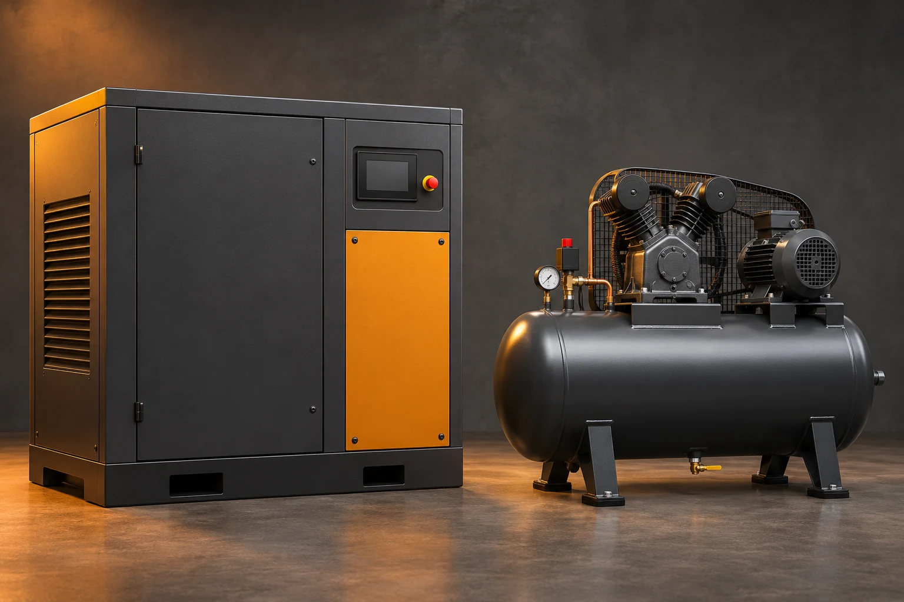
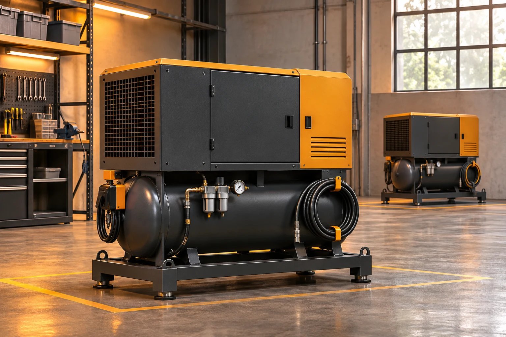
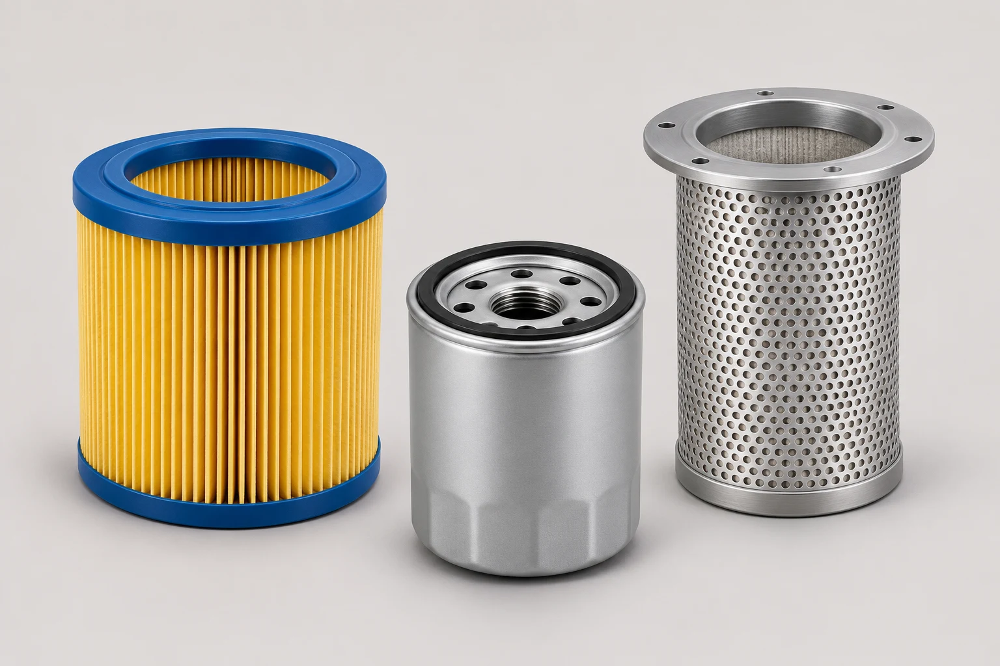
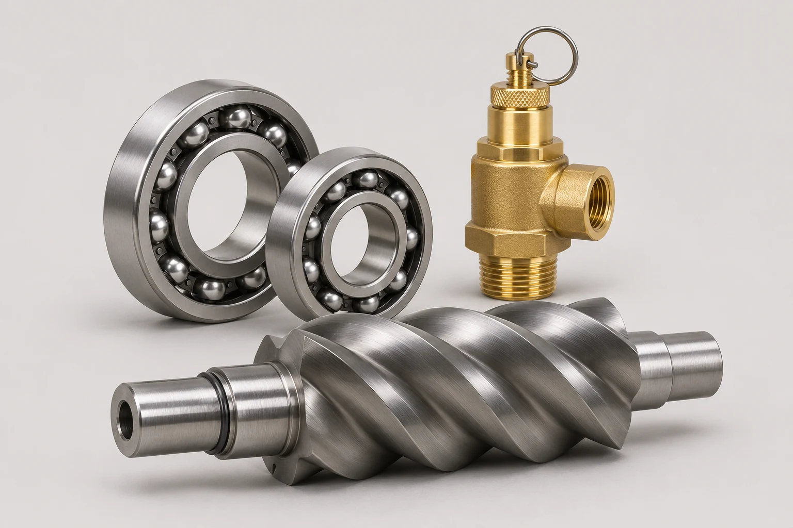
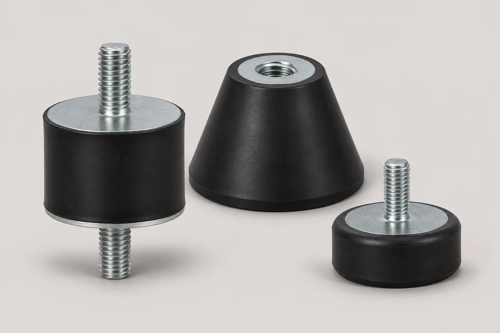

COMPTEC COMPRESSORES
Soluções completas
em ar comprimido.
Da manutenção ao equipamento ideal. Soluções em compressores e ar comprimido para manter sua empresa em movimento.
Assistência multimarcasCuidado com o seu equipamento
Soluções completasDa peça à rede de ar comprimido
Atendimento próximoSão Paulo, região e outros estados
COMPRESSORES E INSUMOS
A solução certa
para cada etapa.
Manutenção, vendas e locação: conheça as frentes de atendimento apresentadas pela Comptec.
 01
01Manutenção de compressores
Assistência técnica multimarcas para avaliar falhas, realizar reparos e cuidar do funcionamento do seu equipamento.
Solicitar assistência→
02Venda de compressores
Orientação para escolher equipamentos conforme a aplicação, a pressão e a demanda de ar da sua empresa.
Consultar equipamentos→
03Locação de equipamentos
Consulte os equipamentos disponíveis para locação e as condições de atendimento para sua operação.
Consultar locação→Imagens ilustrativas dos serviços. Consulte o atendimento ao seu equipamento.
REDES DE AR COMPRIMIDO
Do compressor ao ponto de uso.
Projetos de redes de ar comprimido e componentes para distribuição de ar na sua empresa.
Conversar sobre minha rede →MANGUEIRAS HIDRÁULICAS
Montagem para sua aplicação.
Montagem de mangueiras hidráulicas de baixa e alta pressão. Consulte materiais, conexões e disponibilidade.
Consultar mangueiras →DE AR COMPRIMIDO
Compromisso com sua operação.
A COMPTEC
Sobre nós
Quem é a Comptec Compressores?
A Comptec foi fundada com o objetivo de inovar em compressores e sistemas de ar comprimido. Seu diretor conta com mais de 20 anos de experiência no ramo, conforme a apresentação institucional da empresa.
A empresa atua na manutenção e venda de compressores, no fornecimento de peças e lubrificantes e em soluções para redes de ar comprimido. O atendimento reúne conhecimento técnico e atenção à necessidade de cada operação.
- Assistência para diferentes marcas de compressores
- Equipamentos, componentes e insumos em um só lugar
- Atendimento em São Paulo, região metropolitana e Baixada Santista
 Imagem ilustrativa
Imagem ilustrativaLUBRIFICANTES PARA COMPRESSORES
O cuidado começa
com a escolha certa.
Lubrificantes fazem parte da linha de insumos da Comptec. Informe a marca e o modelo do compressor para consultar as opções adequadas ao equipamento.
A SOLUÇÃO COMEÇA COM A ESCOLHA CERTA
Soluções e produtos
Conheça as possibilidades e converse com nossa equipe sobre a melhor aplicação.
EQUIPAMENTOS
O compressor certo faz a diferença.
Cada aplicação tem uma demanda. Consulte opções de compressores e receba orientação considerando a pressão, a vazão e a rotina de uso da sua empresa.
Consultar equipamentos →01 Aplicação e rotina de trabalho
02 Pressão e vazão necessárias
03 Estrutura de instalação
LINHA DE PRODUTOS
Tudo para o seu sistema de ar comprimido

Rede de ar comprimido em PPR
Tubos e componentes para sua rede.
Consultar produto →
Filtros e separadores
Consulte o elemento para o seu compressor.
Consultar produto →
Acessórios para compressores
Componentes para a manutenção do equipamento.
Consultar produto →
Separadores e secadores
Soluções para o tratamento do ar comprimido.
Consultar produto →
Conexões
Conexões e adaptadores para diferentes aplicações.
Consultar produto →
Pressostatos
Consulte a compatibilidade com seu sistema.
Consultar produto →
Amortecedores de vibração
Componentes para apoio dos equipamentos.
Consultar produto →
Insumos para manutenção
Desengripante, limpa-contato, adesivo anaeróbico e fita isolante.
Consultar produto →Imagens ilustrativas das categorias, sem representar modelos ou estoque específico. Consulte compatibilidade e disponibilidade.
ASSISTÊNCIA MULTIMARCAS
Marcas citadas para referência de equipamentos atendidos. Consulte o atendimento ao seu modelo.
DO PRIMEIRO CONTATO À SOLUÇÃO
Você conta a necessidade.
A gente ajuda com o próximo passo.
Começar agora →Conte o que precisa
Informe o equipamento, o modelo e o serviço ou produto que procura.
Converse com a equipe
Alinhamos os detalhes e avaliamos a necessidade de uma análise técnica.
Receba uma proposta
Consulte o escopo, a disponibilidade e as condições para a sua solução.
Quais marcas de compressores são atendidas?
A Comptec divulga assistência para marcas como Atlas Copco, Chicago Pneumatic, Schulz, Metalplan, Sullair, Wayne, Pressure, Chiaperini, Puma e Ingersoll Rand. Informe a marca e o modelo para confirmar o atendimento.
O que preciso informar para pedir um orçamento?
Envie a marca, o modelo, sua cidade e uma descrição da necessidade. Para manutenção, uma foto da placa do equipamento e informações sobre o problema ajudam na avaliação inicial.
A Comptec atende fora de São Paulo?
Há atendimento divulgado para São Paulo, região metropolitana, Baixada Santista e outros estados. Consulte a equipe para verificar a disponibilidade e as condições para sua localidade.
Também posso comprar peças e lubrificantes?
Sim. Informe o equipamento e o item que procura para consultar a compatibilidade e a disponibilidade com a equipe.
A Comptec trabalha com locação?
A locação é apresentada no site institucional da Comptec. Consulte a equipe para confirmar os equipamentos disponíveis e as condições.
VAMOS CONVERSAR
O próximo passo
da sua operação
começa aqui.
Conte o que você precisa. Nossa equipe pode ajudar a encontrar uma solução.
(11) 2719-7684 →sac@compteccompressores.com.brSão Paulo e região
Consulte atendimento para sua cidade.